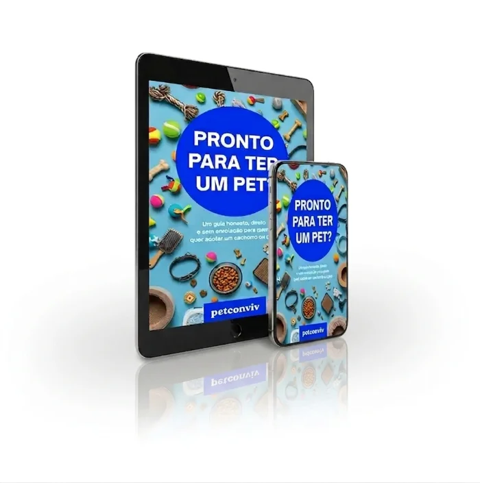

Quem trabalha em home office ao lado de um pet sabe: eles não são apenas espectadores, eles fazem parte da nossa rotina. O Petconviv Pomodoro nasceu para unir o seu momento de foco com o bem-estar do seu companheiro de quatro patas.
Não usamos apenas trilhas genéricas. Cada vídeo do nosso canal foi pensado para acalmar a mente humana e diminuir a ansiedade de separação dos cães e gatinhos.
Clique em iniciar e mergulhe nas suas tarefas. O som ambiente vai criar uma atmosfera de paz, ajudando o seu pet a relaxar profundamente ao seu lado enquanto você produz.
Quando o tempo acabar, o som silencia automaticamente. Esse é o seu lembrete biológico para levantar da cadeira, esticar as pernas e dar 5 minutos de atenção total, dengo ou um petisco para quem te ama incondicionalmente.
Criado na Itália nos anos 80, o método Pomodoro é um dos sistemas de gerenciamento de tempo mais respeitados do mundo. Ele funciona dividindo o trabalho em blocos de foco total e sem distrações (geralmente de 25 minutos), separados por pequenos intervalos de descanso.
Essa quebra cíclica evita o esgotamento mental, melhora a sua concentração e, no nosso caso, cria o cenário ideal para que seu pet aprenda a respeitar seus momentos de trabalho sabendo que logo depois receberá atenção exclusiva.

Equilibrar as entregas do trabalho com a atenção que eles exigem pode ser um desafio se você não souber como organizar a rotina. Se você quer entender a fundo o comportamento do seu parceiro atual para evitar problemas de convivência no home office, ou está se preparando para a chegada de um novo amigo, nós criamos o guia perfeito.
📘 E-book: Pronto para ter um pet?
Descubra o que ninguém te conta antes de adotar ou comprar um Cachorro ou Gato.